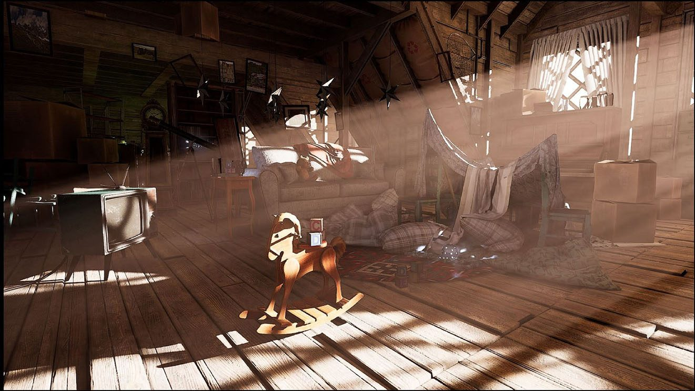
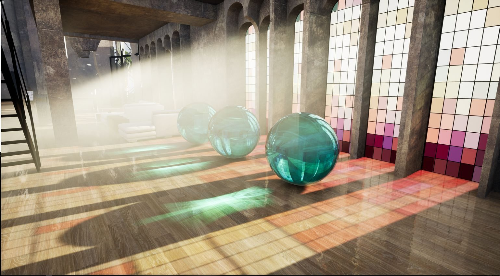
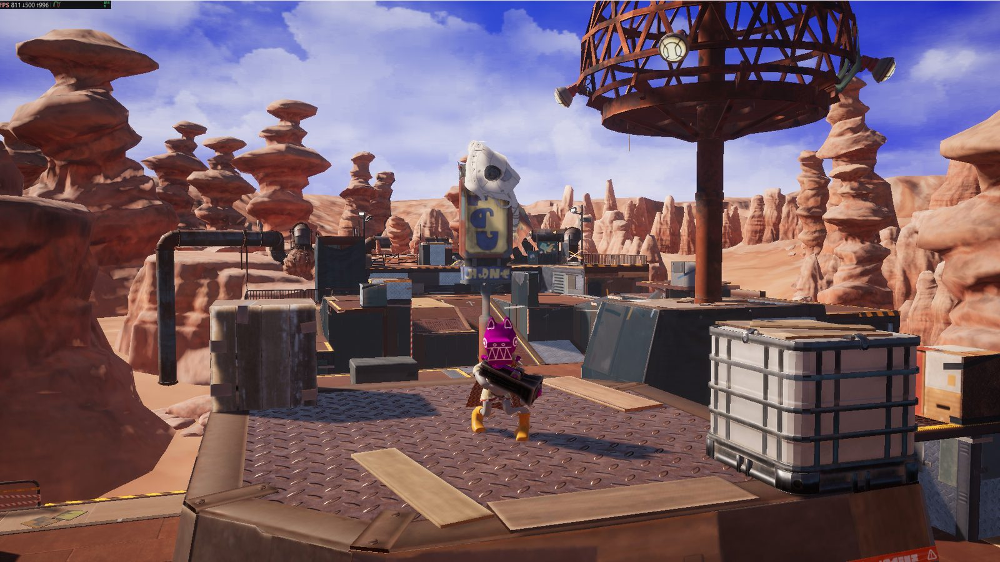

Vite ReSTIR · Global illumination and path tracing
Path-traced lighting, at a cost below Lumen.
Vite ReSTIR is real-time global illumination built on reservoir-based spatiotemporal resampling, with a real-time path tracer on the same pipeline. It is engineered to be the fastest GI solution available: path-traced lighting faster than Lumen at Epic quality.
The problem
Ground truth needs thousands of samples. A frame has room for one or two.
Path tracing produces the reference image every real-time technique is judged against, but it converges over thousands of samples per pixel. Production GI systems close that gap with caches, probes and heavy temporal accumulation — and pay for it in light leaking, lag and the noise, ghosting and blur that make modern renderers look soft.
ReSTIR attacks the sampling problem directly. Instead of tracing more rays, it reuses the good ones: every pixel keeps a small reservoir of light-path candidates and shares it with its neighbours and with the next frame, so a handful of rays per pixel behaves like a far larger sample count.

How it works
Resample, reuse, then shade.
Vite ReSTIR follows the reservoir-resampling family of techniques introduced for direct lighting in 2020 and extended to full paths for global illumination in 2021, engineered for Vite's renderer and frame budgets.
- Initial candidatesEach pixel traces a small number of rays and keeps the most important light-path candidates in a weighted reservoir.
- Temporal reuseReservoirs are reprojected from the previous frame and merged, so lighting quality accumulates while staying responsive to motion.
- Spatial reuseNeighbouring pixels exchange reservoirs, multiplying the effective sample count at the cost of a few extra visibility tests.
- Shade and resolveThe surviving samples are shaded and passed through a light denoise that preserves contact detail.
- Path-tracer modeThe same machinery runs along complete multi-bounce paths for path-traced lighting in real time.
Capabilities
One system, from GI to full path tracing
Real-time global illumination
Fully dynamic multi-bounce diffuse and glossy indirect lighting with no baking and no probe placement.
Real-time path tracer
The same reservoirs drive a real-time path tracer for reference-quality lighting at interactive frame rates.
Reservoir reuse
Temporal and spatial reuse turn a ray or two per pixel into the quality of a far larger sample count.
Many lights and emissives
Builds on the many-light sampling already shipping in Vite through RTXDI, so emissive geometry and dense light rigs light the scene.
Upscaler-ready
Designed to pair with the upscalers and denoisers already integrated in Vite, including DLSS Ray Reconstruction, FSR 4 and XeSS.
Scalable
From a GI-only mode for 60 FPS titles to full path tracing for high-end PCs and captures, on one code path.
The foundation
Built on a ray-tracing stack that already beats Lumen.
Vite ReSTIR extends the ray-traced GI pipeline that ships in Unreal Engine Vite today. In a like-for-like scene, Vite's shipping Dynamic DDGI runs at 2.5× the frame rate of Lumen in UE 5.7 — noise-free by construction, with no denoiser in the path.
The engine also already contains a per-pixel ray-traced GI path with a ReSTIR-style reservoir-resampling final gather, inherited from NvRTX and compiled out by default. Vite ReSTIR develops that path into a production system: path-traced quality where DDGI's probe resolution stops, at a cost designed to stay below Lumen's.

Where it fits
Global illumination options in Vite
| Mode | Lighting | Best for | Status |
|---|---|---|---|
| Static DDGI | Baked probes, near-instant bakes | Hardware without ray tracing | Shipping |
| Dynamic DDGI + SSGI | Ray-traced probes plus screen-space contact detail | 60–120 FPS titles on console-class GPUs | Shipping |
| Per-pixel RT GI, ReSTIR final gather | Reservoir-resampled per-pixel GI with an SVGF denoiser | Reference imagery; higher fidelity than hardware Lumen | Shipping, opt-in build |
| Vite ReSTIR GI | Per-pixel resampled multi-bounce GI, production-tuned | High-fidelity titles and high-end PCs | In development |
| Vite ReSTIR path tracer | Real-time path-traced lighting | Ultra settings, cinematics and captures | In development |
Read more
Related documentation
Background: B. Bitterli et al., Spatiotemporal reservoir resampling for real-time ray tracing with dynamic direct lighting, SIGGRAPH 2020; Y. Ouyang et al., ReSTIR GI: Path resampling for real-time path tracing, HPG 2021.